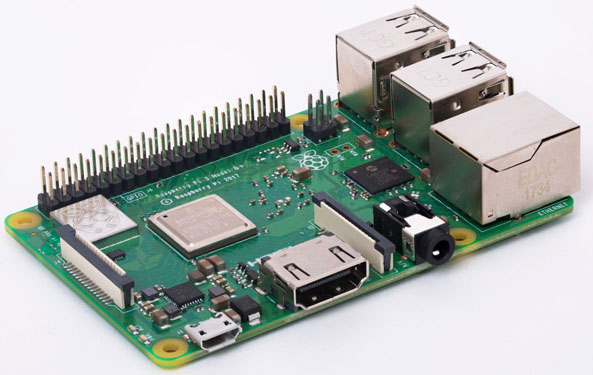

树莓派
概述

Raspberry Pi(中文名为“树莓派”,简写为RPi，(或者RasPi / RPI) [1] 是为学习计算机编程教育而设计)，只有信用卡大小的微型电脑，其系统基于Linux。 [2] 随着Windows 10 IoT的发布，我们也将可以用上运行Windows的树莓派。 [3]
自问世以来，受众多计算机发烧友和创客的追捧，曾经一“派”难求。别看其外表“娇小”，内“心”却很强大，视频、音频等功能通通皆有，可谓是“麻雀虽小，五脏俱全”。
系统安装
1. tf卡准备
- 查找tf卡的设备号。默认已经自动挂载
- 因为tf卡插上之后，系统自动挂载，所以先卸载
| umount /dev/sdc1
卸载完成之后，再查看一下mount查找tf卡，没有找到就卸载成功
|
- 查看所有磁盘列表
- 找到tf卡对应的分区, 选中磁盘
| sudo fdisk /dev/sdc
再输入m可以看到帮助手册
删除分区：d
添加分区：n
查看分区：p
保存操作：w
注：修改后，需要用w保存修改。
|
- 删除原有的分区
2. 系统写入
- 先将文件解压到tf卡中
| unzip -p /home/kaijun/Documents/resource/raspberry/UbuntuMateSD.zip | sudo dd of=/dev/sdc conv=fsync
由于系统比较大，所以这一步会花很长的时间。大概花费了我20多分钟才完成。
|
- 请求系统重新加载分区表
- 为了便于远程连接，开启ssh.在设备的根目录下，创建一个空的ssh文件即可
| sudo mount /dev/sdc1 /mnt -o umask=000
touch /mnt/ssh
|
3. 插入鼠标，键盘，显示器，开始安装系统
将上面烧写好的tf卡拔出来，插入树莓派中，连接鼠标，键盘，显示器，启动即可开始安装
一路下一步下一步，即可安装完成。
参考资料：https://linuxhandbook.com/raspberry-pi-headless-setup/
配置国内软件源
打开系统配置文件
| sudo gedit /etc/apt/sources.list
|
将下面的内容替换进去
1
2
3
4
5
6
7
8
9
10
11
12
13
14
15 | deb http://mirrors.tuna.tsinghua.edu.cn/ubuntu-ports/ xenial-updates main restricted universe multiverse
deb-src http://mirrors.tuna.tsinghua.edu.cn/ubuntu-ports/ xenial-updates main restricted universe multiverse
deb http://mirrors.tuna.tsinghua.edu.cn/ubuntu-ports/ xenial-security main restricted universe multiverse
deb-src http://mirrors.tuna.tsinghua.edu.cn/ubuntu-ports/ xenial-security main restricted universe multiverse
deb http://mirrors.tuna.tsinghua.edu.cn/ubuntu-ports/ xenial-backports main restricted universe multiverse
deb-src http://mirrors.tuna.tsinghua.edu.cn/ubuntu-ports/ xenial-backports main restricted universe multiverse
deb http://mirrors.tuna.tsinghua.edu.cn/ubuntu-ports/ xenial main universe restricted
deb-src http://mirrors.tuna.tsinghua.edu.cn/ubuntu-ports/ xenial main universe restricted
|
开启无线AP模式
- 将github上面的wifi热点开源项目安装到本地
| sudo git clone https://github.com/oblique/create_ap
cd create_ap
sudo make install
|
- 安装依赖库
| sudo apt-get install util-linux procps hostapd iproute2 iw haveged dnsmasq
|
- 输入ifconfig显示网络接口
- 打开热点
| sudo create_ap wlan0 网卡 热点名 密码
执行完成之后，检查是否wifi创建成功
|
- 开机自动启动热点
| 在/etc/rc.local中`exit 0` 的前面添加如下代码
sudo create_ap wlan0 网卡 热点名称 密码 &
|
修改完成之后，即可sudo reboot 重启电脑，默认的ip地址是192.168.12.1
参考资料：https://www.jianshu.com/p/9852b60d9b34
至此，树莓派的系统配置就完成啦！